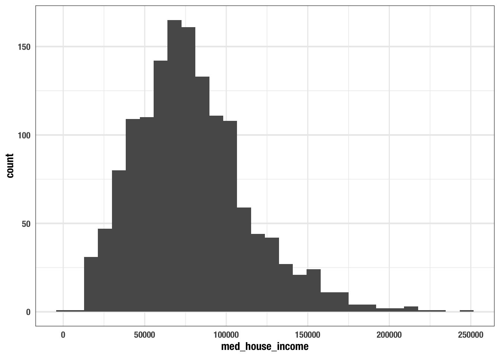
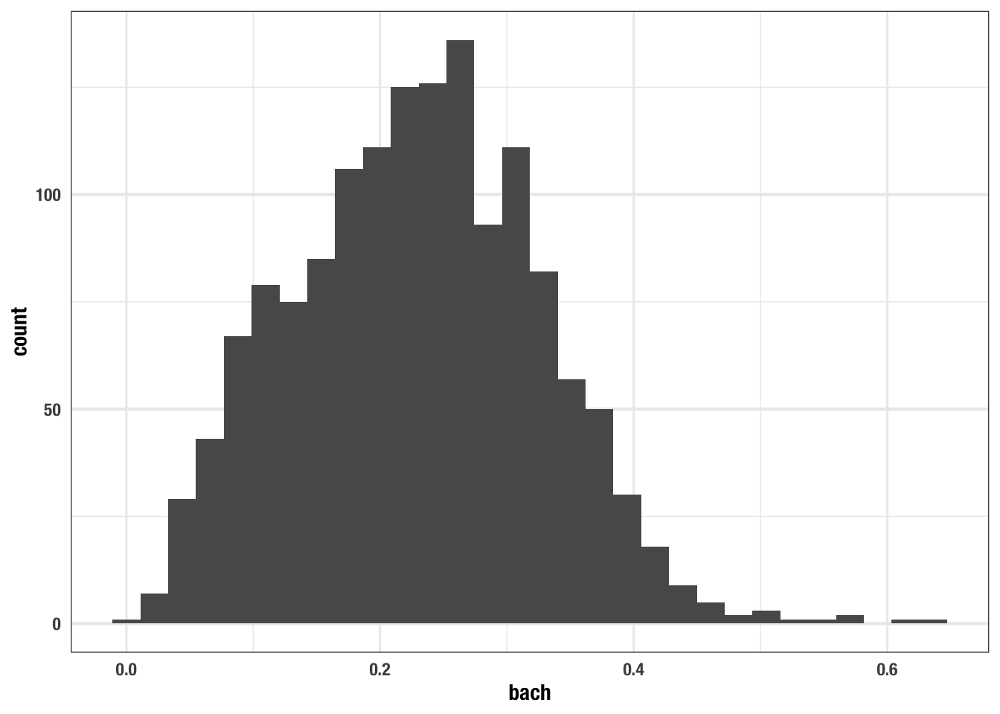
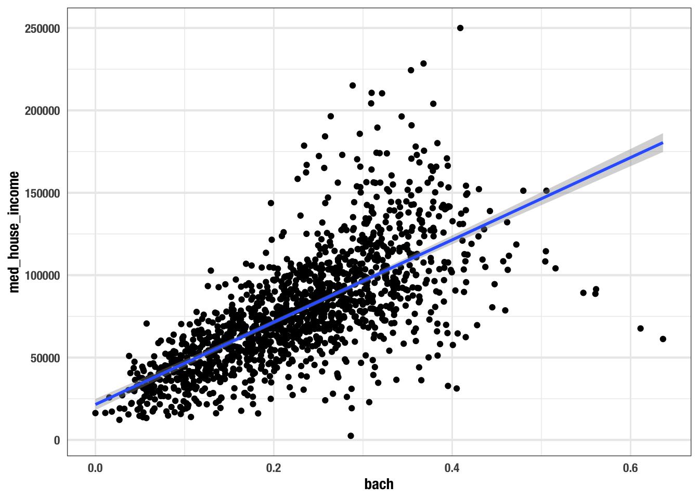
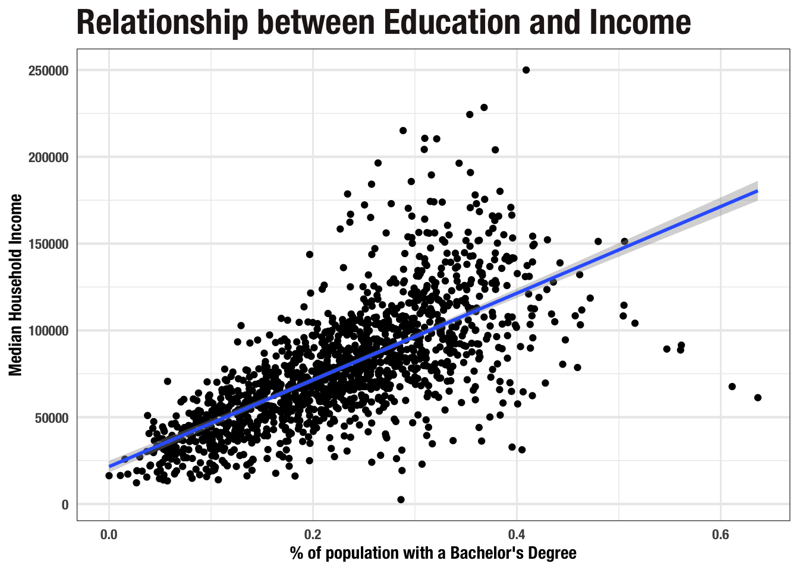
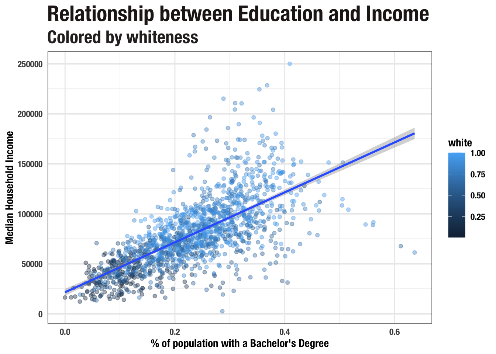

Chapter 4 Exploratory Visual Analysis
4.1 Data in the municipal context
The so called “proliferation of data” has created vast troves of data asking to be explored. We are, in essence, in the beginning of a new Gold Rush. But rather than discovering gold, today the gold is both being created an discovered. This explosion of data is the product of improved technology in both the collection and storage of data.
If we focus our gaze towards the municipal government, the story is similar, progress is slower, and the data are more familiar. Local governments have been collecting data for centuries but until recently it was not always accessible, or even considered “data”. Take the city of Boston as an example. Since the 19th century boston has been issuing and recording building permits. Through a massive digitization effort these permits are now accessible in an online database.1 Not only are governments slowly turning to modern methods of data storage, but they are also creating applications to encourage citizens to engage with their local governments. Mobile and web applications will hopefully facilitate greater interaction between citizen and government.2 Each and every one of these citizen to government interactions are recorded and stored in database—though not all are open and accessible to the citizen scientist.
Boston has built a few mobile applications for its residents. Notable among these apps are the BOS:3113, ParkBoston4, the city’s least favorite Boston PayTix5, and the new Blue Bikes6. Through BOS:311 residents can communicate directly to the Department of Public Works by recording an issue, it’s location, and even an image of the issue. Blue Bikes trips, 311 requests, and much more are provided to the public via Analyze Boston, Boston’s data portal7.
This new availability of data has unintentionally altered the way in which scientists interact with data. For the purposes of scientific inquiry, scientists and analysts have historically been rather close to the data generation process. While we as residents and citizens interact with governmental agencies, it is not in the name of science. And the governmental agencies are engagin with residents in for the purpose of governance, not science. As such, much—if not all—of the open and public data that we interact within the urban informatics—and greater digital humanities—fields was not generated with the express purpose of being analyzed. This inherently changes the way in which analyses are approached.
In approaching data of this nature, researchers have began embracing a paradigm of exploratory data analysis (EDA). EDA is extremely useful for developing insights from data in which there were no a priori8 hypotheses. In their influential book R for Data Science, Garret Grolemund and Hadley Wickham describe this inductive approach of exploratory data analysis.
Data exploration is the art of looking at your data, rapidly generating hypotheses, quickly testing them, then repeating again and again and again.9
When researchers set out to test a hypothesis they often will become closely involved with the data generation process. In this scenario, researchers are more likely to have preconceived hypotheses and expectiation of what they may find hidden in their data.
This condition is often not the case when working with open data. We do not always know at the outset of what we are looking for. With open data—and any data really—you never know what you may find if you begin to dig. Whip out your hand shovel and prepare to upturn the soil. You might find seedlings that may sprout into your next study.
4.2 EDA lifecycle
This chapter will introduce you to visual data exploration through the use of the R package ggplot2. You will ask questions of your data, visualize relationships, and draw inferences from the graphics you develop.
The below image from R for Data Science is renowned for its representation of the data analysis workflow. The concept map encompasses the need to get data (import), clean it up (tidy), explore, and finally communicate insights. The box in blue is a representation of EDA. Within EDA we will find ourselves transforming our data—creating new variables, aggregating, etc.—visualizing it, and creating statistical models.

This chapter will focus on the visualization step of EDA. We have all heard the trope that “an image is worth a thousand words.” I’d take a leap and say that a good visualization is worth ten thousand words. An older statistical manual from the National Institute of Standards and Technology (NIST) beautifully lays out the role that visualization plays in EDA.
The reason for the heavy reliance on graphics is that by its very nature the main role of EDA is to open-mindedly explore, and graphics gives the analysts unparalleled power to do so, enticing the data to reveal its structural secrets, and being always ready to gain some new, often unsuspected, insight into the data. In combination with the natural pattern-recognition capabilities that we all possess, graphics provides, of course, unparalleled power to carry this out.
In the following section, you will become acquainted with the graphical R package ggplot2 for visual analysis and the American Community Survey. We will walk through the process building a chart from the ground up and drawing inferences from it along the way.
4.3 The American Community Survey
For this first data exploration we will work with data from the American Community Survey (ACS). While the ACS is central to Urban Informatics (UI), it does not exhibit the primary characteristic of that we rely upon in UI—namely being naturally occurring. This is a topic we will explore in more depth later. In order to use the ACS data, we must understand what data we are actually working with. The ACS is one of the most fundamental data sets in American social sciences. The ACS is administered by the US Census Bureau but is done so for much different purposes. Article I Section 2 of the US Constitution legislates a decennial census.
. . . [an] enumeration shall be made within three Years after the first Meeting of the Congress of the United States, and within every subsequent Term of ten Years, in such Manner as they shall by Law direct.
The above clause requires the US government to conduct a complete counting of every single individual in the United States for the purposes of determining how many congressional representatives each state will have. These censuses provided a detailed image of how many people there were in the US, but lacked much information beyond that. The first census asked each household for “the number of free white males under 16 years” and of “16 years and upward”, the “number of free White females”, “number of other free persons, and the”number of slaves"10 Since then the breadth of questions asked during the census has increased as well as other supplementary sources of information.
The ACS was developed in response to two shortcomings of the decennial census. The first being that the census only occurrs every ten years. There was, and still is, a need for more consistent and current data. Not only are the censuses too infrequent, but they also do not provide the most colorful picture of who it is that lives within the US. Local, state, and federal governments desired more context about who their constituents are.
The ACS was developed and first officially released in 200511. The ACS uses a “series of monthly samples” to “produce annual estimates for the same small areas (census tracts and block groups) formerly surveyed via the decennial census long-form sample”12. As Catherine Rampell wrote in the New York times
“It tells Americans how poor we are, how rich we are, who is suffering, who is thriving, where people work, what kind of training people need to get jobs, what languages people speak, who uses food stamps, who has access to health care, and so on.”13
The impact of the ACS are wide stretching from funding to social research.
4.3.1 Understanding ACS Estimates
Continuous sampling done by the US Census Bureau occurs at a monthly basis and are used to produce annual estimates14. There are two different types of estimates one can retrieve from the ACS. These are the 1-year and 5-year estimates. Each kind of estimate serves a different purpose.
When choosing between 1-year and 5-year estimates we are making a tradeoff. 1-year estimates provide us with the most current data possible at the expense of a smaller sample size. This means that the estimates are not as reliable as the 5-year estimates which are collected over a period of 60 months. On the other hand, when we consider 5-year estimates, we benefit from a large sample size and increased reliability, but we lose the ability to make statements about a single year.
In the cases where 5-year estimates are used researchers are analyzing populations and rates derived from five years of data collection. This requires you, the researcher, to qualify this with a statement to the effect of “the rate of unemployment in 2014-2018 was 4%”15. Because of this, you are unable to use consecutive 5-year estimates to analyze annual trends. In the case that you need to analyse annual trends 1-year estimates are recommended.
There is also another important tradeoff one must consider when using ACS data and that is of unit of analysis. The census and ACS are conducted at the household level. However, estimates are provided for geographic areas. These geographic areas have a hierarchy going from block groups at the smallest level geography, to census tracts, and to counties. Beyond counties are geographies at the state level and even larger. Urban informatics is inherently focuses on a more micro—arguably meso—unit of analysis.
The following analysis is done using the Massachussetts census indicators published from BARI. The dataset is based on 5-year estimates from the ACS at the tract level.
4.4 A first visualization
For your first introduction to R, we will explore the relationship between education and income in Massachusetts.
NOTE: this needs to be updated once I make uitk a package with R objects
4.4.1 Familiarize yourself
There is no one best way to begin an exploratory analysis to guarantee interesting outcomes. But before one begins their EDA, they must know what their data actually contain. Loaded into your environment already is an object called acs_edu. acs_edu contains data demographic information about every census tract in Massachusetts.
Print acs_edu to the console. What do you see?
acs_edu
## # A tibble: 1,456 x 7
## med_house_income less_than_hs hs_grad some_coll bach white black
## <dbl> <dbl> <dbl> <dbl> <dbl> <dbl> <dbl>
## 1 105735 0.0252 0.196 0.221 0.325 0.897 0.0122
## 2 69625 0.0577 0.253 0.316 0.262 0.885 0.0171
## 3 70679 0.0936 0.173 0.273 0.267 0.733 0.0795
## 4 74528 0.0843 0.253 0.353 0.231 0.824 0.0306
## 5 52885 0.145 0.310 0.283 0.168 0.737 0.0605
## 6 64100 0.0946 0.294 0.317 0.192 0.966 0.00256
## 7 37093 0.253 0.394 0.235 0.101 0.711 0.0770
## 8 87750 0.0768 0.187 0.185 0.272 0.759 0.0310
## 9 97417 0.0625 0.254 0.227 0.284 0.969 0.00710
## 10 43384 0.207 0.362 0.262 0.124 0.460 0.105
## # … with 1,446 more rows## # A tibble: 1,456 x 7 is printed out at the top followed by column names, their types—e.g. <dbl>—their respective values and, to the far left we see the numbers 1 through 10 before each row of values.
Let us dissect # A tibble: 1,456 x 7 a little bit more. This alone is quite informative. It tells us that the type of object we are working with is a tibble with 1,456 rows and 7 columns.
A tibble is a method of representing rectangular data and is very similar to a table one may create within Excel with rows an columns. When working with tibbles we try to adhere to what are called the principles of tidy data16. There are three key principles that we ought to keep in mind when working with rectangular data.
- Each variable forms a column.
- Each observation forms a row.
- Each value represents a combination of an observation and a variable.
There can often be confusion about what should be a variable and what is to be an observation. In Tidy Data Hadley Wickham write that
“A variable contains all values that measure the same underlying attribute (like height, temperature, duration) across units. An observation contains all values measured on the same unit (like a person, or a day, or a race) across attributes.”17
Say we have a tibble of survey respondents. In this case each row should be a respondent and each column should be a variable that is associated with that respondent. This could be something such as age, birth date, or the respondents response to a survey question.
In the case of our acs_edu tibble, our unit of observation, aka row, is a census tract. Each variable measures a different characteristic of a census tract. For example, the column med_house_income is an estimate of the median household income of a given census tract. The other columns indicate what proportion of a population meets some criteria.
How does one know what criteria their columns represent? This brings us to the importance of column names. Column names ought to be descriptors of their corresponding variables. This is a surprsingly difficult task! In acs_edu we can infer—though we should always have documentation to supplement the data—that the variables measure income, educational attainment rates, and race.
4.4.2 Form a question
Once you have familiarized yourself with the data that you will be working with, you can begin to form a question that can be feasibly be explored or answered with the present data. The importance of domain expertise in EDA cannot be understated. Without an understanding of what underlying phenomena your data are measuring it will be extremely difficult to come to meaningful insights.
My background is in sociology. Within sociology, and specifically social stratification, it is believed that more education leads to more social prestiege, economic stability, and is more readily accessible by the white population. Given this background and the data available in acs_edu, we will explore the relationship between education and income. We will try to answer the question what is the relationship between education and income? We will first look at each variable in isolation and then try and identify any relationship that may exist between the two variables.
4.4.3 Building a graph
To create our visualizations we will use the package ggplot2 from the tidyverse. Before we can begin, we need to make sure that the collection of functions from ggplot2 are available to us with the library() function.
Reminder:
library(pkg_name)loads a package into your workspace and makes the functions and objects it exports available to you.
To begin building a ggplot, we use the function ggplot(). There are two function arguments these being data and the aesthetics mapping. The data is the tibble that we wish to visualize. In this case we want to visualize the data from acs_edu.
We will begin constructing our first visualization with the ggplot() function using the acs_edu object.
Reminder: Functions are characterised by the parentheses at the end of them. Functions do things whereas objects hold information.
Notice that this plot is entirely empty. This is because we have not defined what it is that we want to visualize. ggplot uses what is called a grammar of graphics (this is expanded upon in depth in the Visualizing Trends and Relationships chapter) which requires us to sequentiallly build our graphs by first defining what data and variables will be visualized and then adding layers to the plot.
The next step we need to take is to define which columns we want to visualize. These are called the aesthetics and they are defined using the aes() function which is supplied to the mapping argument. The purpose of aes() is to tell ggplot which columns are mapped to what. The most important and fundamental of these are the x and y arguments. These refer to the x and y axes in the chart that we will begin to make.
Before we begin to analyze the relationship between med_house_income and bach (bachelor’s degree attainment rate), we ought to do our due dilligence of looking at the distribution of each of these first. Let us start with the med_house_income column. When exploring only a single variable, we want to supply that to the x argument of aes().

Alright, we are making progress. We can see that the x axis is now filled out a bit more. The axis breaks have been labeled as has the axis itself. In order to see the data in a graphical representation, we need to determine how we want to see the data and what sort of geometry will be used to visualize it.
To add geometry to our ggplot, we use the plus sign + which signifies that we are adding a layer on top of the basic graph. There are many ways we can visualize univariate data but the histogram has stood the test of time. To create a histogram we add the geom_histogram() layer to our existing ggplot code.

Note: To ensure that our code is legible we add each new layer on a line. R will manage the indentation for you. Code readibility is very important and you will thank yourself later for instilling good practices from the start.
This histogram illustrates the distribution of median household income in the state of Massachusetts. The median value seems to sit somewhere around $75k with a few outliers near $250k as well demonstrating a right skew.
Reminder: The skew is where there are few [observations].
Usually when we look at distributions of wealth they are extremely right skewed meaning there are a few people who make an outrageous amount of money. What is interesting is that this histogram is rather normally distributed almost challenging intuition. This is because the ACS does something called top-coding. Top-coding is the practice of creating a ceiling value. For example, if there is a tract has a median household income of $1m, that will be reduced to the top-coded value—what appears to be $250k. This creates what are called censored data.
Censored data: data “in which the value of a measurement or observation is only partially known.”1819
Let us now create a histogram of our second variable of interest, bach.

This histogram illustrates the distribution of the bachelor degree attainment rate (the proportion of people with a bachelor’s degree) across census tracts in Massachusetts. Because we did our homework ahead of time, we know that the national attainment rate in 2018 for people over 25 was ~35%20. Our histogram shows that within MA there is a lot of variation in the attainment rate from a low of about 0% to a high of over 60%. There is not a steep peak in the distribution which tells us that there is a fair amount of variation in the distribution.
Now that there is an intuition of the distribution and characteristics of both med_house_income and bach, we can begin to try and answer the question what is the effect of education on median household income? The phrasing of our question will determine how we visualize our data.
When stating research questions we often phrase it as what is the effect of x on y? In this formulation we are determining that bach, our independent variable, will be plotted on the x axis and med_house_income will be plotted on the y axis. To visualize this bivariate relationship we will create a scatter plot.
This structure and phrasing is useful for continuity in verbal communication, graphical representation, and hypothesis testing.
We can visualize this relationship by adding additional mapped aesthetics. In this case, we will map both the x and y arguments of the aes() function. Rather than adding histogram layer, we will need to create a scatter plot. Scatter plots are created by plotting points for each (x, y) pair. To get such an effect we will use the geom_point() layer.

The above scatter plot provides a lot of information. We see that there is a positive linear trend—that is that when the bach value increases so does the med_house_income variable. When looking at a scatter plot we are looking to see if there is a consistent pattern that can be sussed out.
In this scatterplot we can see that there is a linear pattern. When the points on the scatter plot are closer to eachother and demonstrate less spread, that means there is a stronger relationship between the two variables. Imagine if we drew a line through the middle of the points, we would want each point to be as close to that line as possible. The further the point is away from that line, the more variation there is. In these cases we often create linear regression models to estimate the relationship.
Using ggplot, we can plot the estimated linear regression line on top of our scatterplot. This is done with a geom_smooth() layer. By default, geom_smooth() does not plot the linear relationship. To do that, we need to specify what kind of smoothing we would like. To plot the estimated linear model, we set method = "lm".
ggplot(acs_edu, aes(x = bach, y = med_house_income)) +
geom_point() +
geom_smooth(method = "lm")
## `geom_smooth()` using formula 'y ~ x'
Wonderful! To finish up this graphic, we should add informative labels. Labels live in their own layer which is created with labs(). Each argument maps to an aesthetic—e.g. x and y. By default ggplot uses the column names for axis labels, but these labels are usually uninformative.
Let’s give the plot a title and better labels for its axes. We will set the following arguments to labs()
x = "% of population with a Bachelor's Degree"y = "Median Household Income"title = "Relationship between Education and Income"
ggplot(acs_edu, aes(x = bach, y = med_house_income)) +
geom_point() +
geom_smooth(method = "lm") +
labs(x = "% of population with a Bachelor's Degree",
y = "Median Household Income",
title = "Relationship between Education and Income")
## `geom_smooth()` using formula 'y ~ x'
Note that each argument is placed on a new line. Again, this is to improve readability.
What can we determine from this graph? Take a few minutes and write down what you see and what you can infer from that.
Consider asking these questions:
- Is there a relationship between our variables?
- Is the relationship linear?
- Which direction does the trend go?
- How spread out are the value pairs?
- Are there any outliers?
This chart ilicits further lines of inquiry. For example, in the sociological literature there is a well documented achievement gap. The achievement gap can be traced along racial lines—though it is not inherently caused by race but rather intertwined with it. Can this be seen in the tracts of Massachusetts?
We can visualize a third variable on our chart by mapping another aesthetic. When we add a third variable to the visualization we are generally trying to illustrate group membership or size / magnitude of the third variable. Due to the large number of points on our chart already, we may benefit more from mapping color rather than size—imagine 1,000 points overlapping even more than they already do.
We can map the proportion of the population that is white to the color of our points. We do this by setting the color aesthetic to white. While we’re at it, let us include a subtitle which is informative to the viewer.
ggplot(acs_edu, aes(x = bach, y = med_house_income, color = white)) +
geom_point(alpha = .4) +
geom_smooth(method = "lm") +
labs(x = "% of population with a Bachelor's Degree",
y = "Median Household Income",
title = "Relationship between Education and Income",
subtitle = "Colored by whiteness")
## `geom_smooth()` using formula 'y ~ x'
What can we conclude now? Does the addition of the third variable increase or decrease the utility of our scatter plot? Does the trend seem to mediated by race? I’ll leave those questions to you to answer.
You’ve now completed your first visual analysis. You’ve learned how to create publication ready histograms and scatter plots using ggplot2. This is no small feat!
This chapter provided you with data that was used in our visualization exercises. You’re going to want to be able to visualize and analyze your own data. The next chapter introduces you reading data and some of the most common file formats you may encounter.
Boston Building Permits: https://www.boston.gov/departments/inspectional-services/how-find-historical-permit-records↩︎
Some note about co-production.↩︎
BOS:311: https://itunes.apple.com/us/app/boston-citizens-connect/id330894558?mt=8↩︎
ParkBoston: https://apps.apple.com/us/app/parkboston/id953579075↩︎
Boston PayTix: https://apps.apple.com/us/app/boston-paytix/id1068651854↩︎
BlueBikes:↩︎
“Relating to or denoting reasoning or knowledge which proceeds from theoretical deduction rather than from observation or experience.” Oxford Dictionary↩︎
https://www.census.gov/history/www/through_the_decades/index_of_questions/1790_1.html↩︎
https://www2.census.gov/programs-surveys/acs/methodology/design_and_methodology/acs_design_methodology_report_2014.pdf↩︎
https://www.census.gov/programs-surveys/acs/methodology.html↩︎
https://www.nytimes.com/2012/05/20/sunday-review/the-debate-over-the-american-community-survey.html↩︎
https://www2.census.gov/programs-surveys/acs/methodology/design_and_methodology/acs_design_methodology_report_2014.pdf↩︎
https://www.census.gov/content/dam/Census/library/publications/2018/acs/acs_general_handbook_2018_ch03.pdf↩︎
https://stats.stackexchange.com/questions/49443/how-to-model-this-odd-shaped-distribution-almost-a-reverse-j↩︎
https://www.census.gov/data/tables/2018/demo/education-attainment/cps-detailed-tables.html↩︎